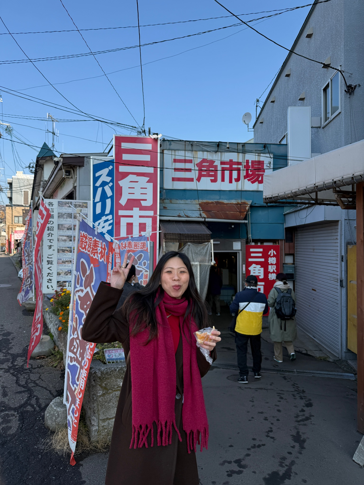

I'm a product manager based in Singapore. I care most about the "why" behind user behaviour, not just what users do, but the context and motivation that drives those choices. That curiosity shapes how I frame problems and where I push for deeper research before jumping to solutions.
At Shopee, I've worked on notification infrastructure and user engagement, the kind of problems that look simple on the surface but get complicated fast when you're building for millions of users across very different markets. My last few projects ran A/B tests across five Southeast Asian regions, so I've learned to think carefully about what "success" means at that scale.
Before Shopee, I spent over a year at TikTok as a UX analyst, translating qualitative feedback into product decisions. That role taught me how to spot signal in a lot of noise and to be skeptical of the first story the data seems to tell.
Outside of work, I'm into canoeing, community service, and vibe coding. The water tracker app in my side projects started as a way to eat my own dogfood and turned into three iterations of actually trying to get the UX right.